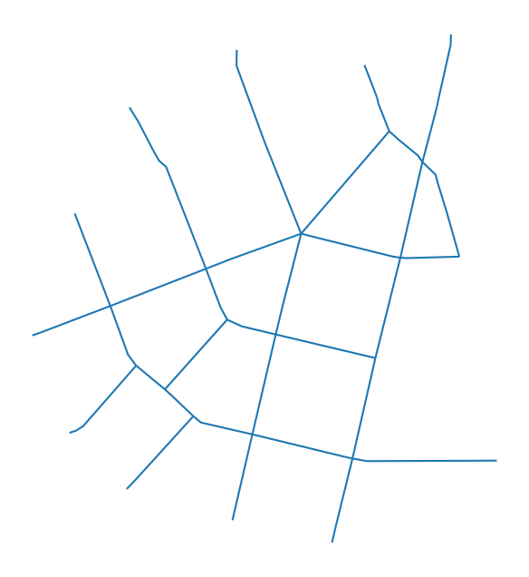
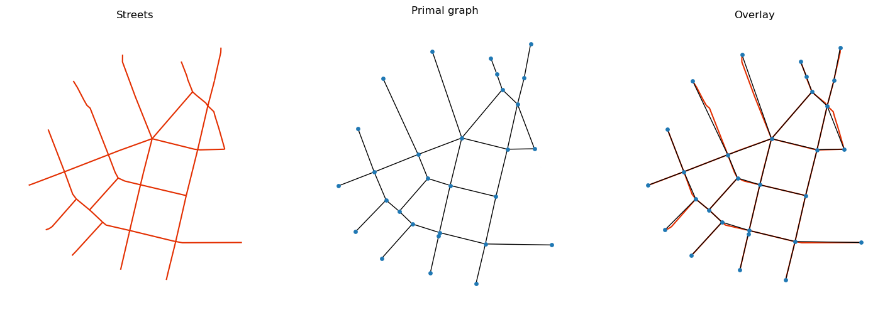
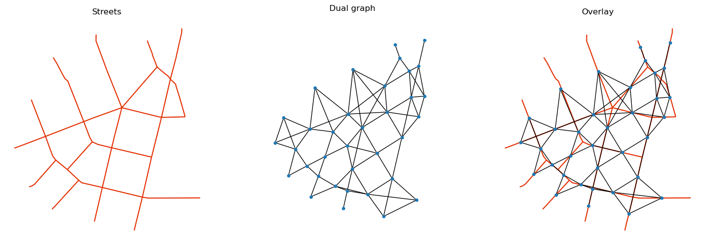
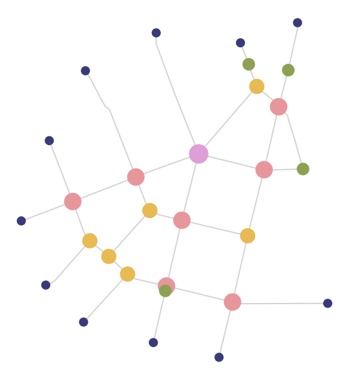

Note
Converting from GeoDataFrame to Graph and back#
The model situation expects to have all input data for analysis in GeoDataFrames, including street network (e.g. from shapefile).
[1]:
import geopandas as gpd
import matplotlib.pyplot as plt
import momepy
import networkx as nx
[2]:
streets = gpd.read_file(momepy.datasets.get_path("bubenec"), layer="streets")
[3]:
ax = streets.plot(figsize=(8, 8))
ax.set_axis_off()

We have to convert this LineString GeoDataFrame to a networkx.Graph. We use momepy.gdf_to_nx and later momepy.nx_to_gdf as a pair of interconnected functions. gdf_to_nx supports both primal and dual graphs. The primal approach will save the length of each segment to be used as a weight later, while dual will save the angle between segments (allowing angular centrality).
[4]:
graph = momepy.gdf_to_nx(streets, approach="primal")
[5]:
f, ax = plt.subplots(1, 3, figsize=(18, 6), sharex=True, sharey=True)
streets.plot(color="#e32e00", ax=ax[0])
for i, facet in enumerate(ax):
facet.set_title(("Streets", "Primal graph", "Overlay")[i])
facet.axis("off")
nx.draw(
graph, {n: [n[0], n[1]] for n in list(graph.nodes)}, ax=ax[1], node_size=15
)
streets.plot(color="#e32e00", ax=ax[2], zorder=-1)
nx.draw(
graph, {n: [n[0], n[1]] for n in list(graph.nodes)}, ax=ax[2], node_size=15
)

[6]:
dual = momepy.gdf_to_nx(streets, approach="dual")
[7]:
f, ax = plt.subplots(1, 3, figsize=(18, 6), sharex=True, sharey=True)
streets.plot(color="#e32e00", ax=ax[0])
for i, facet in enumerate(ax):
facet.set_title(("Streets", "Dual graph", "Overlay")[i])
facet.axis("off")
nx.draw(
dual, {n: [n[0], n[1]] for n in list(dual.nodes)}, ax=ax[1], node_size=15
)
streets.plot(color="#e32e00", ax=ax[2], zorder=-1)
nx.draw(
dual, {n: [n[0], n[1]] for n in list(dual.nodes)}, ax=ax[2], node_size=15
)

At this moment (almost) any networkx method can be used. For illustration, we will measure the node degree. Using networkx, we can do:
[8]:
degree = dict(nx.degree(graph))
nx.set_node_attributes(graph, degree, "degree")
However, node degree is implemented in momepy so we can use directly:
[9]:
graph = momepy.node_degree(graph, name="degree")
Once we have finished our network-based analysis, we want to convert the graph back to a geodataframe. For that, we will use momepy.nx_to_gdf, which gives us several options of what to export.
linesoriginal LineString geodataframe
pointspoint geometry representing street network intersections (nodes of primal graph)
spatial_weightsspatial weights for nodes capturing their relationship within a network
Moreover, edges will contain node_start and node_end columns capturing the ID of both nodes at its ends.
[10]:
nodes, edges, sw = momepy.nx_to_gdf(
graph, points=True, lines=True, spatial_weights=True
)
[11]:
ax = nodes.plot(
column="degree",
cmap="tab20b",
markersize=(nodes["degree"] * 100),
zorder=2,
figsize=(8, 8),
)
edges.plot(ax=ax, color="lightgrey", zorder=1)
ax.set_axis_off()

[12]:
nodes.head(3)
[12]:
| x | y | degree | nodeID | geometry | |
|---|---|---|---|---|---|
| 0 | 1.603586e+06 | 6.464429e+06 | 3 | 0 | POINT (1603585.64 6464428.774) |
| 1 | 1.603413e+06 | 6.464229e+06 | 5 | 1 | POINT (1603413.206 6464228.73) |
| 2 | 1.603269e+06 | 6.464061e+06 | 3 | 2 | POINT (1603268.502 6464060.781) |
[13]:
edges.head(3)
[13]:
| geometry | mm_len | node_start | node_end | |
|---|---|---|---|---|
| 0 | LINESTRING (1603585.64 6464428.774, 1603413.20... | 264.103950 | 0 | 1 |
| 1 | LINESTRING (1603561.74 6464494.467, 1603564.63... | 70.020202 | 0 | 8 |
| 2 | LINESTRING (1603585.64 6464428.774, 1603603.09... | 88.924305 | 0 | 6 |
Preserving the order and index#
By default, the conversion to Graph and back does not preserve the index of the original GeoDataFrame and the order of rows. If you want to ensure that the roundtrip results in equally sorted GeoDataFrame with matching index, use preserve_index=True. This option adds one or two (depending on they type of the index) additional attributes to edges and uses them in conversion from Graph to rebuild the index and the order of rows.
See the default:
[17]:
streets['position'] = range(len(streets))
streets.head()
[17]:
| geometry | position | |
|---|---|---|
| 0 | LINESTRING (1603585.64 6464428.774, 1603413.20... | 0 |
| 1 | LINESTRING (1603268.502 6464060.781, 1603296.8... | 1 |
| 2 | LINESTRING (1603607.303 6464181.853, 1603592.8... | 2 |
| 3 | LINESTRING (1603678.97 6464477.215, 1603675.68... | 3 |
| 4 | LINESTRING (1603537.194 6464558.112, 1603557.6... | 4 |
We have added a column tracking the original position.
[18]:
graph = momepy.gdf_to_nx(streets)
edges = momepy.nx_to_gdf(graph, points=False)
edges.head()
[18]:
| geometry | position | mm_len | |
|---|---|---|---|
| 0 | LINESTRING (1603585.64 6464428.774, 1603413.20... | 0 | 264.103950 |
| 1 | LINESTRING (1603561.74 6464494.467, 1603564.63... | 14 | 70.020202 |
| 2 | LINESTRING (1603585.64 6464428.774, 1603603.09... | 15 | 88.924305 |
| 3 | LINESTRING (1603607.303 6464181.853, 1603592.8... | 2 | 199.746503 |
| 4 | LINESTRING (1603363.558 6464031.885, 1603376.5... | 5 | 203.014090 |
Using preserve_index=True fixes the order and in case of a custom index rebuilds it.
[19]:
graph = momepy.gdf_to_nx(streets, preserve_index=True)
edges = momepy.nx_to_gdf(graph, points=False)
edges.head()
[19]:
| geometry | position | mm_len | |
|---|---|---|---|
| 0 | LINESTRING (1603585.64 6464428.774, 1603413.20... | 0 | 264.103950 |
| 1 | LINESTRING (1603268.502 6464060.781, 1603296.8... | 1 | 99.751190 |
| 2 | LINESTRING (1603607.303 6464181.853, 1603592.8... | 2 | 199.746503 |
| 3 | LINESTRING (1603678.97 6464477.215, 1603675.68... | 3 | 112.296576 |
| 4 | LINESTRING (1603537.194 6464558.112, 1603557.6... | 4 | 68.214706 |